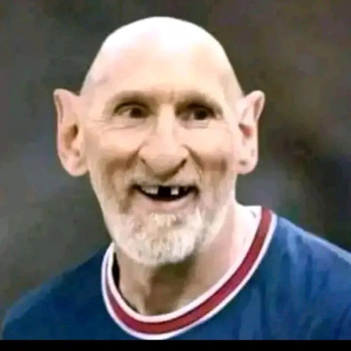
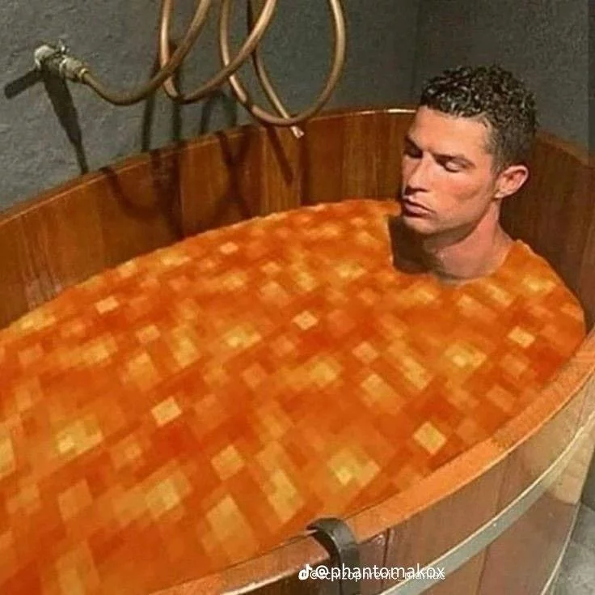

QARABAG BU IL ERZINDE 10 DEFE UCL CEMPIONLUGUNA IMZA ATIB!!! XEBEER MENBEYI(CADUGAR aide VE ofelia)
| Növ: | Mistik / Naməlum |
| Təhlükə: | Yüksək |
| Status: | Araşdırılır |


Kurdemir seheri merkezi idaresiden gelen melumata gore QARABAG FUTBOL KLUBU KAWAII-CHANI TEKNIK DIREKTOR OLARAG CAGIRIB BU HADISE BAS VERENDE KAWAII-CHAN TUALETDE IMIS VE BU TEKLIFI RED ELIYIB (BU XEBERLERE COXDA INANMIYIIN) (YENI XEBEER GS VE BJKNIN MACINDA BJK 5-0 QALIB OLUB...)
UCL'i satin alan slayler(zehra&gunesh) zekani ucl'in resmi ceo yardimcisi vezifesine qaldiracaq1[redaktə et]
UCL'in resmi ceo yardimcisi ola bilecek potansiyeli dasiyan kawaii'den bu teklifi redd etmemesi istenir![redaktə et]
BAKIDA 60* DERECE,XIRDALANDA 90* DERECE MENNEN BU QEDER VERDIYIM MELUMATDARADA COXDA INANMIYIN CUNKI YER ONUN GOY IONUN ALLAH OZU BILER BURNOZ GIRMIYEN YEREDE BASISI SOXMUYUN ALLAHIN MESLEHETINE SUKUR SAGOLUN SALAMAT QALIN